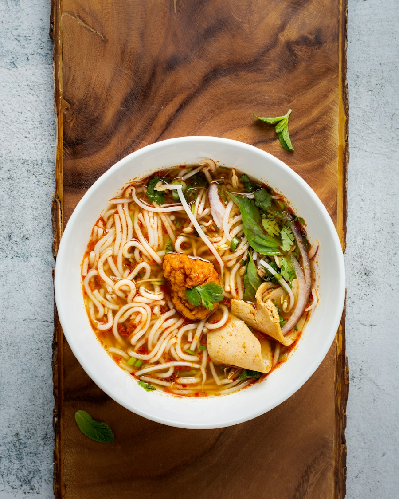
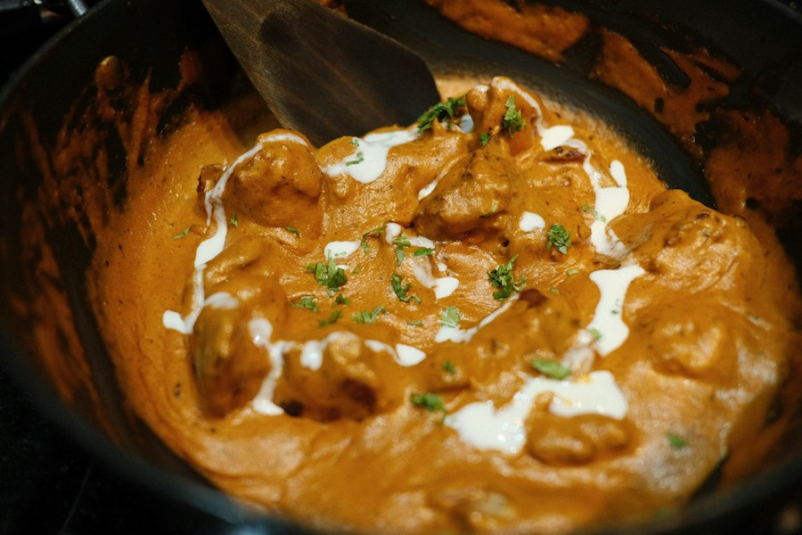
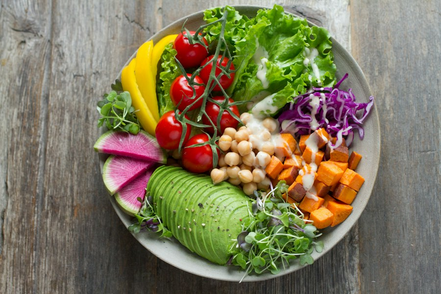
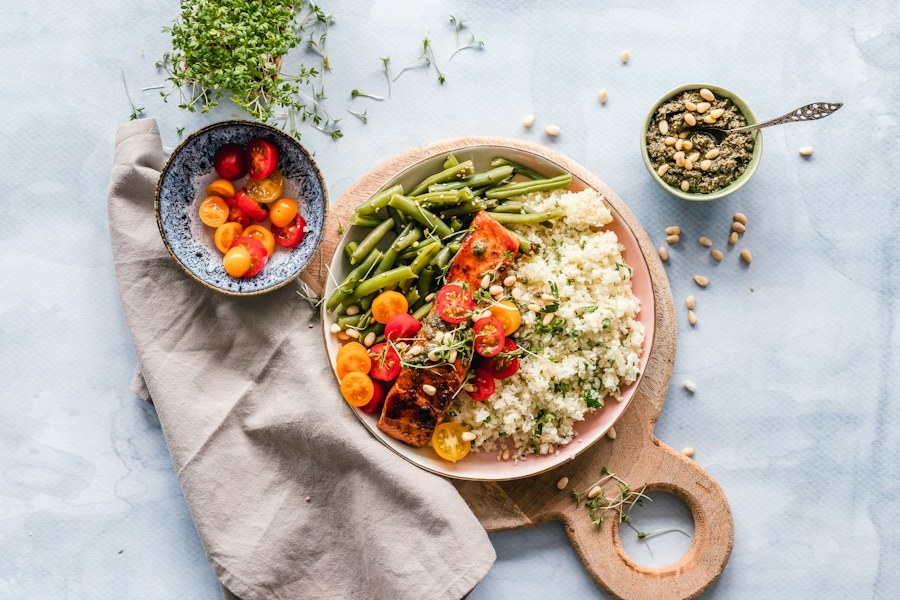

Pad Thai
179 krRisnudlar med ägg, böngroddar, jordnötter, salladslök och tamarind. Välj tofu, kyckling eller grönsaker.
GÄSTFAVORITFRÅN VÅRT KÖK
En meny med thailändska favoriter, lagade på beställning. Flera rätter går att få vegetariska eller veganska. Fråga oss gärna om allergener.
NÅGRA FAVORITER
Priser enligt restaurangens meny
Uppdaterad 2026

Risnudlar med ägg, böngroddar, jordnötter, salladslök och tamarind. Välj tofu, kyckling eller grönsaker.
GÄSTFAVORIT
Klassisk curry med aubergine, bambuskott, thaibasilika och limeblad. Serveras med jasminris.
HET & AROMATISK
Krispig grön papaya, longbean, tomat, morot, jordnötter och chili i frisk citronjuice.
FRÄSCH & STARK
Currymarinerade kycklingspett med krämig jordnötssås. En uppskattad klassiker.
FRÅN GRILLEN
Glasnudlar, sallad, gurka, mynta och basilika i rispapper, serverat med chili-vinägrett.
VEGANSKT ALTERNATIVMild kokossoppa med svamp, tomat, citrongräs, limeblad och galanga. Med jasminris.
MILD & LEN